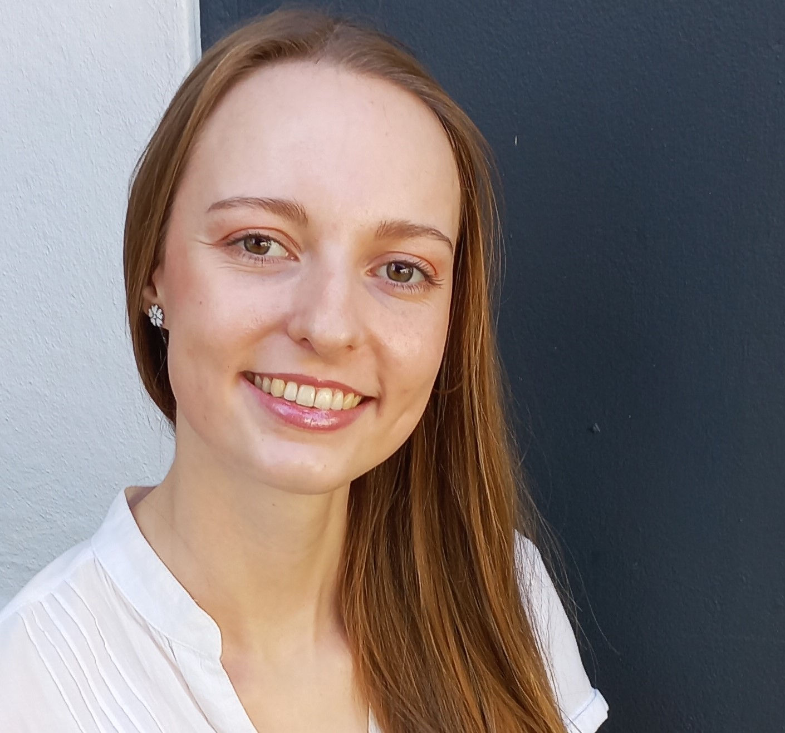

Studying at Stellenbosch University established and sharpened my interest in different facets of both electrical and mechanical systems. After graduating I have been eager to learn and practically apply my engineering knowledge in industry. I also aspire to continue learning and to broaden my skill set by applying my problem-solving expertise in the field of software development. I am excited about the possibility to grow as an engineer and contribute to society. I hope to apply my knowledge to help people and solve problems.
Matriculated with a Namibia Senior Secondary Certificate Higher Level (NSSCH). Subjects include: accounting, biology, foreign language German, mathematics, physical science and first language English.
Graduated with a cum laude in Mechatronic Engineering at Stellenbosch University. Granted membership to the Golden Key International Honour Society in 2016.
Graduated with a cum laude master’s degree in Mechatronic Engineering. My research focused on vibration signal processing techniques, an operational modal analysis and structural fatigue considerations. As part of my master’s research project I had the privilege of taking part in the Southern oCean seAsonaL Experiment (SCALE) voyages on board a polar supply and research vessel, the SA Agulhas II. The data and experience gained through these voyages allowed me to investigate my master’s thesis topic titled “The Detection and Quantification of Wave Slamming from Full-Scale Measurements on a Polar Vessel”. View my thesis.
Completed a 6 month part-time online software engineering course where I learnt Python and Java. I also learnt some basic front-end development skills, how to create and work with databases as well as some machine learning concepts. I compeleted several projects, which helped me put my newfound knowledge into practice. The Python projects had various applications, namely calculating the interest on an investment or a home loan repayment amount, a project management system and a stock taking system. The Java programs were written with the common goal of implementing a project management system. However, the first employs object-oriented programming (OOP) and the second uses structured query language (SQL). Contact me to request access to my private GitHub repositories or view my HyperionDev portfolio.
I have applied my vibration knowledge, which I gained from my master’s degree, to investigate the vibration of aerospace designs. Vibration data was primarily post processed using Octave/Matlab scripts. I also performed Finite element Analysis (FEA) simulations on structural components of design projects. The FEAs approximate the natural frequencies and mode shapes of the designed structures. The maximum design loads are also applied in the FEAs to determine the total deformation and the maximum stresses and strains that could arise. The design of components can then be optimized to improve functionality and minimize structural failures.